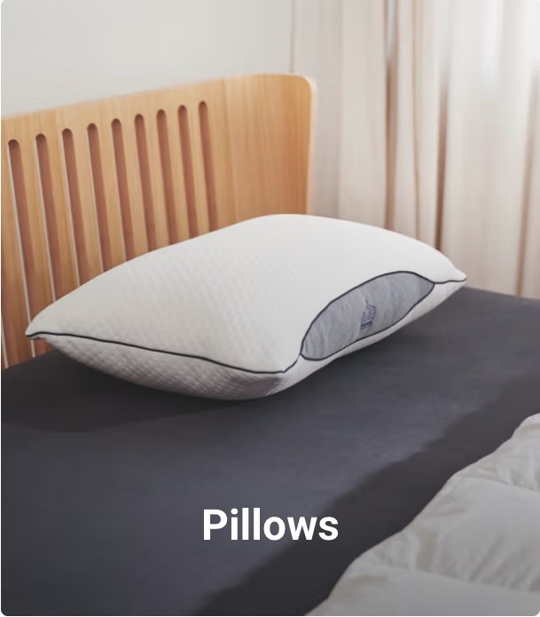

product variant

product variant
Layered vine duvet cover | 100% organic cotton
Add a contemporary touch to your bedroom with Layered Vine. The playful line pattern in shades of green, camel, and black creates a stylish, modern look.
Find a storeLayered vine
duvet cover
Oops, something went wrong...
There was an error displaying this product. Layered vine Add a contemporary touch to your bedroom with Layered Vine. The playful line pattern in shades of green, camel, and black gives your bed a modern yet natural look. Prefer a calmer vibe? Simply flip the duvet cover to reveal the solid green reverse
Auping duvet covers
Convenient: Insert Flap and Button Down System All Auping duvet covers feature an extra-long insert flap, making it easy to tuck the cover under your mattress. Cold feet are a thing of the past. You can recognize the extra-long insert flap by the length size: 200/220 cm. Auping duvet covers and duvets also come with the button down system handy buttons and loops that let you fasten the duvet and cover together to prevent shifting. The term "button down" comes from fashion and literally means "buttoned down," often referring to the buttons on a shirt collar that fasten it neatly in place. Auping duvet covers have loops on the inside, while our duvets have buttons in corresponding spots. You can fasten the loops from the cover around these buttons so the duvet stays securely in place. Plus, the buttons and loops make it easier to make your bed neatly. Sizes of Our Duvet Covers Our duvet cover sizes are tailored to match Auping’s range of duvets and pillows for a perfect fit. In addition, the duvet covers and pillowcases are also suitable for most standard duvets and pillows. Auping duvet covers are available in both single and double sizes: 140 x 200/220 cm including 1 pillowcase of 60 x 70 cm 200 x 200/220 cm including 2 pillowcases of 60 x 70 cm 240 x 200/220 cm including 2 pillowcases of 60 x 70 cm 260 x 200/220 cm including 2 pillowcases of 60 x 70 cm Sustainability At Auping, we dream of a well-rested world. Of sleeping under beautifully made bedding produced in an environ
Product specifications
Quality 100% organic cotton Kwaliteit Luxe hotelkwaliteit Omkeerbaar Ja, beide zijden zijn te gebruiken Instopstrook Extra lange instopstrook Sluiting kussensloop Dubbele hotelsluiting Kussenslopen 1 kussensloop bij 140 cm, 2 kussenslopen bij 200, 240 en 260 cm Washability Wash with similar colours at 40 or 60 degrees Sustainability GOTS & Oeko-tex
Discover more
product variant
Adventure duvet cover
More info →product variant
Glacier Duvet Cover
More info →product variant
White lines satin
More info →product variant
Cloud four seasons duvet
More info →product variant
Nest 4 seasons duvet
More info →product variant
Nest duvet
More info →product variant